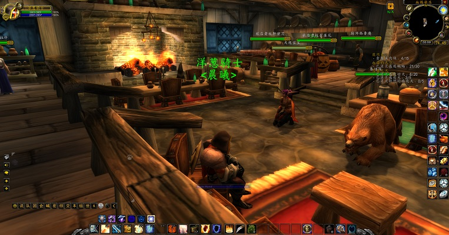
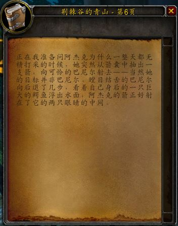

<!DOCTYPE html>
<html>
<head>
    <!-- hexo-inject:begin --><!-- hexo-inject:end --><meta charset="utf-8">
    
    <title>洋葱骑士的异世界之旅（二） | 晨曦图书馆</title>
    
    
        <meta name="keywords" content="洋葱骑士的异世界之旅（二）">
    
    <meta name="viewport" content="width=device-width, initial-scale=1, maximum-scale=1">
    <meta name="description" content="初开始成立公会，并且作为会长，洋葱并没有像想象中的那样成就满满，而是感觉到一股责任的重担。 每天看着成员列表里人数的上下起伏，洋葱的心也随之起伏不定起来。当初跟大R说好的成立一个休闲公会，想来就来想走就走，这本来就在意料之中，洋葱这样宽慰自己。但是内心的波动是不会骗人的，它总是把你最真实的一面告诉你。洋葱不禁想起了2016年的初夏……咳咳，打住打住，扯远了。 之后洋葱在练级之余最常干的事就是查询">
<meta property="og:type" content="article">
<meta property="og:title" content="洋葱骑士的异世界之旅（二）">
<meta property="og:url" content="https://dawn-wow.info/wiki/洋葱骑士的异世界之旅（二）/index.html">
<meta property="og:site_name" content="晨曦图书馆">
<meta property="og:description" content="初开始成立公会，并且作为会长，洋葱并没有像想象中的那样成就满满，而是感觉到一股责任的重担。 每天看着成员列表里人数的上下起伏，洋葱的心也随之起伏不定起来。当初跟大R说好的成立一个休闲公会，想来就来想走就走，这本来就在意料之中，洋葱这样宽慰自己。但是内心的波动是不会骗人的，它总是把你最真实的一面告诉你。洋葱不禁想起了2016年的初夏……咳咳，打住打住，扯远了。 之后洋葱在练级之余最常干的事就是查询">
<meta property="og:image" content="https://dawn-wow.info/wiki/洋葱骑士的异世界之旅（二）/lvguan1.jpg">
<meta property="og:image" content="https://dawn-wow.info/wiki/洋葱骑士的异世界之旅（二）/qingshan.JPG">
<meta property="og:updated_time" content="2019-10-29T17:24:44.864Z">
<meta name="twitter:card" content="summary">
<meta name="twitter:title" content="洋葱骑士的异世界之旅（二）">
<meta name="twitter:description" content="初开始成立公会，并且作为会长，洋葱并没有像想象中的那样成就满满，而是感觉到一股责任的重担。 每天看着成员列表里人数的上下起伏，洋葱的心也随之起伏不定起来。当初跟大R说好的成立一个休闲公会，想来就来想走就走，这本来就在意料之中，洋葱这样宽慰自己。但是内心的波动是不会骗人的，它总是把你最真实的一面告诉你。洋葱不禁想起了2016年的初夏……咳咳，打住打住，扯远了。 之后洋葱在练级之余最常干的事就是查询">
<meta name="twitter:image" content="https://dawn-wow.info/wiki/洋葱骑士的异世界之旅（二）/lvguan1.jpg">
    

    
        <link rel="alternate" href="/atom.xml" title="晨曦图书馆" type="application/atom+xml">
    

    
        <link rel="icon" href="/images/wiki.png">
    

    <link rel="stylesheet" href="/libs/font-awesome/css/font-awesome.min.css">
    <link rel="stylesheet" href="/libs/open-sans/styles.css">
    <link rel="stylesheet" href="/libs/source-code-pro/styles.css">

    <link rel="stylesheet" href="/css/style.css">
    <script src="/libs/jquery/2.1.3/jquery.min.js"></script>
    <script src="/libs/jquery/plugins/cookie/1.4.1/jquery.cookie.js"></script>
    
    
        <link rel="stylesheet" href="/libs/lightgallery/css/lightgallery.min.css">
    
    
        <link rel="stylesheet" href="/libs/justified-gallery/justifiedGallery.min.css"><!-- hexo-inject:begin --><!-- hexo-inject:end -->
    
    
    
    


</head>
</html>
<body>
    <!-- hexo-inject:begin --><!-- hexo-inject:end --><div id="container">
        <header id="header">
    <div id="header-main" class="header-inner">
        <div class="outer">
            <a href="/" id="logo">
                <i class="logo"></i>
                <span class="site-title">晨曦图书馆</span>
            </a>
            <nav id="main-nav">
                
                    <a class="main-nav-link" href="/">首页</a>
                
                    <a class="main-nav-link" href="/archives">归档</a>
                
                    <a class="main-nav-link" href="/categories">分类</a>
                
                    <a class="main-nav-link" href="/tags">标签</a>
                
                    <a class="main-nav-link" href="/about">关于晨曦</a>
                
                    <a class="main-nav-link" href="http://cn.60wdb.com" rel="external nofollow noopener noreferrer" target="_blank">六零数据库</a>
                
            </nav>
            
            <div id="search-form-wrap">

    <form class="search-form">
        <input type="text" class="ins-search-input search-form-input" placeholder="Search">
        <button type="submit" class="search-form-submit"></button>
    </form>
    <div class="ins-search">
    <div class="ins-search-mask"></div>
    <div class="ins-search-container">
        <div class="ins-input-wrapper">
            <input type="text" class="ins-search-input" placeholder="Type something...">
            <span class="ins-close ins-selectable"><i class="fa fa-times-circle"></i></span>
        </div>
        <div class="ins-section-wrapper">
            <div class="ins-section-container"></div>
        </div>
    </div>
</div>
<script>
(function (window) {
    var INSIGHT_CONFIG = {
        TRANSLATION: {
            POSTS: 'Posts',
            PAGES: 'Pages',
            CATEGORIES: 'Categories',
            TAGS: 'Tags',
            UNTITLED: '(Untitled)',
        },
        ROOT_URL: '/',
        CONTENT_URL: '/content.json',
    };
    window.INSIGHT_CONFIG = INSIGHT_CONFIG;
})(window);
</script>
<script src="/js/insight.js"></script>

</div>
        </div>
    </div>
    <div id="main-nav-mobile" class="header-sub header-inner">
        <table class="menu outer">
            <tr>
                
                    <td><a class="main-nav-link" href="/">首页</a></td>
                
                    <td><a class="main-nav-link" href="/archives">归档</a></td>
                
                    <td><a class="main-nav-link" href="/categories">分类</a></td>
                
                    <td><a class="main-nav-link" href="/tags">标签</a></td>
                
                    <td><a class="main-nav-link" href="/about">关于晨曦</a></td>
                
                    <td><a class="main-nav-link" href="http://cn.60wdb.com" rel="external nofollow noopener noreferrer" target="_blank">六零数据库</a></td>
                
                <td>
                    
    <div class="search-form">
        <input type="text" class="ins-search-input search-form-input" placeholder="Search">
    </div>

                </td>
            </tr>
        </table>
    </div>
</header>

        <div class="outer">
            
            
                <aside id="sidebar">
   
        
    <div class="widget-wrap" id="categories">
        <h3 class="widget-title">
            <span>categories</span>
            &nbsp;
            <a id="allExpand" href="#">
                <i class="fa fa-angle-double-down fa-2x"></i>
            </a>
        </h3>
        
        
        
         <ul class="unstyled" id="tree"> 
                    <li class="directory">
                        <a href="#" data-role="directory">
                            <i class="fa fa-folder"></i>
                            &nbsp;
                            公会建设
                        </a>
                         <ul class="unstyled" id="tree">  <li class="file"><a href="/wiki/关于晨曦公会活动制度的说明/">关于晨曦公会活动制度的说明</a></li>  </ul> 
                    </li> 
                    
                    <li class="directory open">
                        <a href="#" data-role="directory">
                            <i class="fa fa-folder-open"></i>
                            &nbsp;
                            晨曦夜话
                        </a>
                         <ul class="unstyled" id="tree">  <li class="file"><a href="/wiki/洋葱骑士的异世界之旅/">洋葱骑士的异世界之旅（一）</a></li>  <li class="file active"><a href="/wiki/洋葱骑士的异世界之旅（二）/">洋葱骑士的异世界之旅（二）</a></li>  </ul> 
                    </li> 
                     <li class="file"><a href="/wiki/index/">Welcome to 晨曦公会</a></li>  </ul> 
    </div>
    <script>
        $(document).ready(function() {
            var iconFolderOpenClass  = 'fa-folder-open';
            var iconFolderCloseClass = 'fa-folder';
            var iconAllExpandClass = 'fa-angle-double-down';
            var iconAllPackClass = 'fa-angle-double-up';
            // Handle directory-tree expansion:
            // 左键单独展开目录
            $(document).on('click', '#categories a[data-role="directory"]', function (event) {
                event.preventDefault();

                var icon = $(this).children('.fa');
                var expanded = icon.hasClass(iconFolderOpenClass);
                var subtree = $(this).siblings('ul');
                icon.removeClass(iconFolderOpenClass).removeClass(iconFolderCloseClass);
                if (expanded) {
                    if (typeof subtree != 'undefined') {
                        subtree.slideUp({ duration: 100 });
                    }
                    icon.addClass(iconFolderCloseClass);
                } else {
                    if (typeof subtree != 'undefined') {
                        subtree.slideDown({ duration: 100 });
                    }
                    icon.addClass(iconFolderOpenClass);
                }
            });
            // 右键展开下属所有目录
            $('#categories a[data-role="directory"]').bind("contextmenu", function(event){
                event.preventDefault();
                
                var icon = $(this).children('.fa');
                var expanded = icon.hasClass(iconFolderOpenClass);
                var listNode = $(this).siblings('ul');
                var subtrees = $.merge(listNode.find('li ul'), listNode);
                var icons = $.merge(listNode.find('.fa'), icon);
                icons.removeClass(iconFolderOpenClass).removeClass(iconFolderCloseClass);
                if(expanded) {
                    subtrees.slideUp({ duration: 100 });
                    icons.addClass(iconFolderCloseClass);
                } else {
                    subtrees.slideDown({ duration: 100 });
                    icons.addClass(iconFolderOpenClass);
                }
            })
            // 展开关闭所有目录按钮
            $(document).on('click', '#allExpand', function (event) {
                event.preventDefault();
                
                var icon = $(this).children('.fa');
                var expanded = icon.hasClass(iconAllExpandClass);
                icon.removeClass(iconAllExpandClass).removeClass(iconAllPackClass);
                if(expanded) {
                    $('#sidebar .fa.fa-folder').removeClass('fa-folder').addClass('fa-folder-open')
                    $('#categories li ul').slideDown({ duration: 100 });
                    icon.addClass(iconAllPackClass);
                } else {
                    $('#sidebar .fa.fa-folder-open').removeClass('fa-folder-open').addClass('fa-folder')
                    $('#categories li ul').slideUp({ duration: 100 });
                    icon.addClass(iconAllExpandClass);
                }
            });  
        });
    </script>

    
        
    <div class="widget-wrap widget-list">
        <h3 class="widget-title"><span>links</span></h3>
        <div class="widget">
            <ul>
                
                    <li>
                        <a href="http://acfun.cn" rel="external nofollow noopener noreferrer" target="_blank">Acfun</a>
                    </li>
                
                    <li>
                        <a href="http://bilibili.com" rel="external nofollow noopener noreferrer" target="_blank">Bilibili</a>
                    </li>
                
                    <li>
                        <a href="https://www.venganza.org/" rel="external nofollow noopener noreferrer" target="_blank">Church of the FSM</a>
                    </li>
                
                    <li>
                        <a href="http://www.scp-wiki.net/" rel="external nofollow noopener noreferrer" target="_blank">SCP-Foundation</a>
                    </li>
                
                    <li>
                        <a href="https://www.pixiv.net/" rel="external nofollow noopener noreferrer" target="_blank">Pixiv</a>
                    </li>
                
                    <li>
                        <a href="https://en.wikiquote.org/" rel="external nofollow noopener noreferrer" target="_blank">Wikiquote</a>
                    </li>
                
            </ul>
        </div>
    </div>


    
    <div id="toTop" class="fa fa-angle-up"></div>
</aside>
            
            <section id="main"><article id="post-洋葱骑士的异世界之旅（二）" class="article article-type-post" itemscope="" itemprop="blogPost">
    <div class="article-inner">
        
        
            <header class="article-header">
                
                    <div class="article-meta">
                        
    <div class="article-category">
    	<i class="fa fa-folder"></i>
        <a class="article-category-link" href="/categories/晨曦夜话/">晨曦夜话</a>
    </div>

                        
                        
    <div class="article-date">
        <i class="fa fa-calendar"></i>
        <a href="/wiki/洋葱骑士的异世界之旅（二）/">
            <time datetime="2019-10-28T15:40:20.000Z" itemprop="datePublished">2019-10-28</time>
        </a>
    </div>


                        
                    </div>
                
                
    
        <h1 class="article-title" itemprop="name">
            洋葱骑士的异世界之旅（二）
        </h1>
    

            </header>
        
        
        <div class="article-entry" itemprop="articleBody">
        
        
            
        
        
            <p></p>
<p>初开始成立公会，并且作为会长，洋葱并没有像想象中的那样成就满满，而是感觉到一股责任的重担。</p>
<p>每天看着成员列表里人数的上下起伏，洋葱的心也随之起伏不定起来。当初跟大R说好的成立一个休闲公会，想来就来想走就走，这本来就在意料之中，洋葱这样宽慰自己。但是内心的波动是不会骗人的，它总是把你最真实的一面告诉你。洋葱不禁想起了2016年的初夏……咳咳，打住打住，扯远了。</p>
<p>之后洋葱在练级之余最常干的事就是查询队友或者路人的名字，看他或者她是否已经有公会了。从傍晚的暴风城矮人区到南海镇凌晨三点的酒馆，洋葱也逐渐变得厚脸皮起来。“要加入我们公会不？休闲公会，和谐有爱哈！”，洋葱总是说着飘渺的话却也不脸红，毕竟大家都忙着练级，公会频道半天也没一句话，没有纷争那不就是和谐么。</p>
<p>随着一个个新人加入，公会也慢慢有了点活力。偶尔喊个五人本，也有两三个人响应了。在奥特兰克山脉，在剃刀沼泽，在阿拉希高地，在祖尔法拉克，洋葱和队友们战胜了一个又一个敌人，迅速的成长起来。洋葱这时开始幻想着和公会的小伙伴们一起，打开奥妮克希亚巢穴的大门，讨伐黑龙公主，深入熔火之心，打败火焰之王拉格纳罗斯，想必那时必将能和战友一起分享这无限的喜悦。</p>
<p></p>
<p>洋葱没有意识到，这时的他所度过的时光，将是他在异世界最快乐的时光。而在不经意之间，这些时光就会从指缝里悄悄溜走。</p>
<p>洋葱曾经在荆棘谷拜读过大名鼎鼎的赫米特·奈辛瓦里所写的《荆棘谷的青山》,里面所描写的正是洋葱幻想过的异世界生活——白天拿着盾牌，在丛林中为队员们探路；晚上则手持火炬，作为守夜人守护整个营地。但很快，洋葱将发现他的想法错的离谱……</p>
<p>这段时间，公会里最活跃的是等级遥遥领先的盗贼最后的乱射，我们都叫他为乱射。因为一直相差十几级，洋葱没有和乱射一起做过任务下过副本。但据其平时言行，洋葱猜测他应该是一直一个人活动。乱射常混迹于加基森和菲拉斯的荒野，单人完成各种有难度的任务，后来还在NGA上发了一个盗贼单刷黑铁酒馆的帖子，在洋葱心里，是个大神无疑了。洋葱还委托让乱射帮忙打些美味的蚌肉，乱射也是二话不说就寄到了洋葱邮箱里。</p>
<p>后来等到洋葱终于来到加基森，可以跟乱射一起任务的时候，乱射突然说他要AFK了，觉得没意思，然后名字就永久的灰了下去。虽然此时公会仍然保持着强劲的发展势头，但是所谓盛极必衰，洋葱想起了贾母在中秋佳节的叹息，或许这就是第一个预兆。洋葱突然想到某天或许自己的名字也会灰去，晨曦这两个字也将不会再被人提起了。</p>
<p>前文中有提到，“……感受脚下泥土的分量了……他就会为这种想法尝尽苦头。”，原谅作者文笔有限，这里就强行接上伏笔好了。说到这个苦头，就不得不提及公会里的另外一个人——铁头娃娃。洋葱当时应该只有二十五级左右，正好接到做维里甘之拳的职业任务，在看完网上的一篇单通任务攻略后，就兴致勃勃的开始了单通大计。维里甘之拳这个任务并不困难，关键是要收集的材料遍布艾泽拉斯大陆，而且很多地方并不是二十多级的角色能够轻易通过的，极为麻烦，没有两个小时的脚程是做不完任务的。不过洋葱还是极为耐心，在通过子任务获取必须的物品“科尔的宝石”后，洋葱偶然发现这个子任务是可以重复领取的，此处再埋下一伏笔。</p>
<p>最困难的一个材料需要从影牙堡垒中取得，圣骑士角色根本无法像盗贼那样潜行进入堡垒，因此洋葱按照攻略选择单打精英小怪。经过若干次尝试，洋葱一次又一次的以灵魂形态出现在银松森林里，不免有些气馁。此时洋葱想到了之前的发现，“要不再接个宝石任务，看看能不能拿到两个宝石？”。说干就干，洋葱兴致勃勃的去黑海岸又接下任务，但是一想到拿宝石还要跑到黑暗深渊，又迟疑了一下，“还是把任务删除了好了……”。有句老话说得好，不作死就不会死，悲剧往往都是发生在作死的时刻，洋葱小手一抖，把主任务删除了，包袱里已经有的三个材料也不翼而飞……</p>
<p>“算了，还是组队从头做起吧。”，洋葱突然看到大脚频道上有个骑士在喊组队做锤子任务，于是就加入了进去——里面就有铁头娃娃。五个骑士组成了骑士小队，其中有三个都是萌新，而且没有开通从米奈希尔港到南海镇的任何一个飞行点，洋葱只好不厌其烦的领着他们从洛克莫丹一直到银松森林。如果你当时正好在阿拉希高地，就会看到这样一个场景，一个秃头骑士后面跟着四个骑士，步调一致，像是军训小队一般，沿着阿拉希的大马路，一往无前。全程历经数个小时，骑士小队终于在影牙堡垒完成了任务。不过铁头加入晨曦是在任务几天过后了，原由至今未知，洋葱也曾跟他提起过之前的经历，两人不禁莞尔。</p>
<p>题归正传，随着时间的推移，洋葱以及大R，穆丝等公会主力都渐渐的达到60级满级。60年代的艾泽拉斯，在玩家满级之后可玩的内容并不多。洋葱除了和公会成员有时一起刷通灵学院，还有斯坦索姆牵马外，渐渐的把另外一份东西放在了心上，那就是组团开荒熔火之心，讨伐奥妮克希亚。</p>
<p>恰巧这个时候，公会又陆续进来了两批”新人”。为什么打引号呢？因为这两批都是艾泽拉斯的老玩家了，之前也都是各自成立了公会，后来由于疏于打理，公会人员过少，因此决定并入晨曦。</p>
<p>这下，看着公会列表上满级的二十来人，洋葱觉得时机到了。</p>
<h2 id="一点趣事"><a href="#一点趣事" class="headerlink" title="一点趣事"></a>一点趣事</h2><blockquote>
<ul>
<li>嘿嘿，没想到啥趣事，失望了没！。</li>
</ul>
</blockquote>

            </div>
        
        <footer class="article-footer">
        </footer>
    </div>
</article>


    
<nav id="article-nav">
    
    
        <a href="/wiki/洋葱骑士的异世界之旅/" id="article-nav-older" class="article-nav-link-wrap">
            <strong class="article-nav-caption">Older</strong>
            <div class="article-nav-title">洋葱骑士的异世界之旅（一）</div>
        </a>
    
</nav>


    
    


<!-- baidu url auto push script -->
<script type="text/javascript">
    !function(){var e=/([http|https]:\/\/[a-zA-Z0-9\_\.]+\.baidu\.com)/gi,r=window.location.href,o=document.referrer;if(!e.test(r)){var n="//api.share.baidu.com/s.gif";o?(n+="?r="+encodeURIComponent(document.referrer),r&&(n+="&l="+r)):r&&(n+="?l="+r);var t=new Image;t.src=n}}(window);
</script>     
</section>
        </div>
        <footer id="footer">
    <div class="outer">
        <div id="footer-info" class="inner">
            Onion Knight &copy; 2019
            <a rel="external nofollow noopener noreferrer" href="http://creativecommons.org/licenses/by-nc-nd/4.0/" target="_blank"></a>
            <br> Powered by <a href="http://hexo.io/" target="_blank" rel="external nofollow noopener noreferrer">Hexo</a>. Theme - <a href="https://github.com/HtPsi/hexo-theme-Wikitten" rel="external nofollow noopener noreferrer" target="_blank">Wikitten</a>
        </div>
    </div>
</footer>

        

    
        <script src="/libs/lightgallery/js/lightgallery.min.js"></script>
        <script src="/libs/lightgallery/js/lg-thumbnail.min.js"></script>
        <script src="/libs/lightgallery/js/lg-pager.min.js"></script>
        <script src="/libs/lightgallery/js/lg-autoplay.min.js"></script>
        <script src="/libs/lightgallery/js/lg-fullscreen.min.js"></script>
        <script src="/libs/lightgallery/js/lg-zoom.min.js"></script>
        <script src="/libs/lightgallery/js/lg-hash.min.js"></script>
        <script src="/libs/lightgallery/js/lg-share.min.js"></script>
        <script src="/libs/lightgallery/js/lg-video.min.js"></script>
    
    
        <script src="/libs/justified-gallery/jquery.justifiedGallery.min.js"></script>
    


<!-- Custom Scripts -->
<script src="/js/main.js"></script>

    </div><!-- hexo-inject:begin --><!-- Begin: Injected MathJax -->
<script type="text/x-mathjax-config">
  MathJax.Hub.Config({"tex2jax":{"inlineMath":[["$","$"],["\\(","\\)"]],"skipTags":["script","noscript","style","textarea","pre","code"],"processEscapes":true},"TeX":{"equationNumbers":{"autoNumber":"AMS"}}});
</script>

<script type="text/x-mathjax-config">
  MathJax.Hub.Queue(function() {
    var all = MathJax.Hub.getAllJax(), i;
    for(i=0; i < all.length; i += 1) {
      all[i].SourceElement().parentNode.className += ' has-jax';
    }
  });
</script>

<script type="text/javascript" src="//cdn.mathjax.org/mathjax/latest/MathJax.js?config=TeX-AMS-MML_HTMLorMML">
</script>
<!-- End: Injected MathJax -->
<!-- hexo-inject:end -->
</body>
